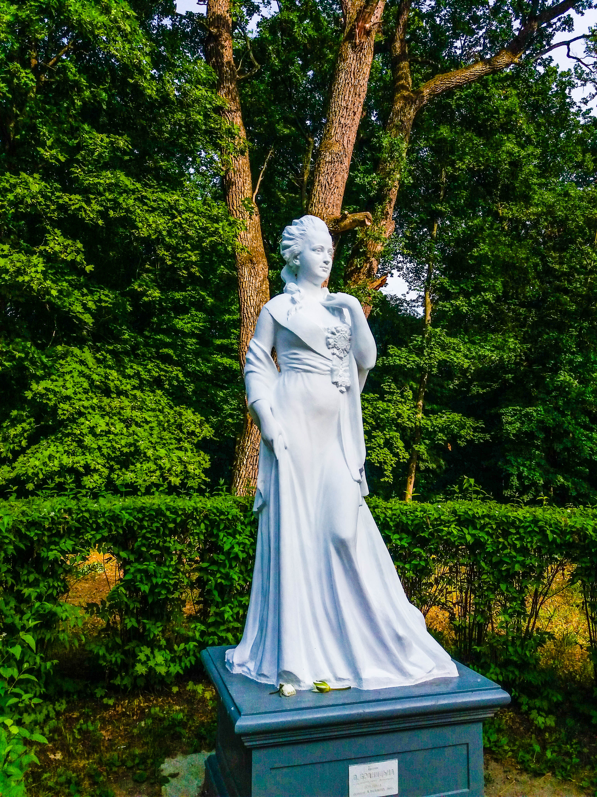
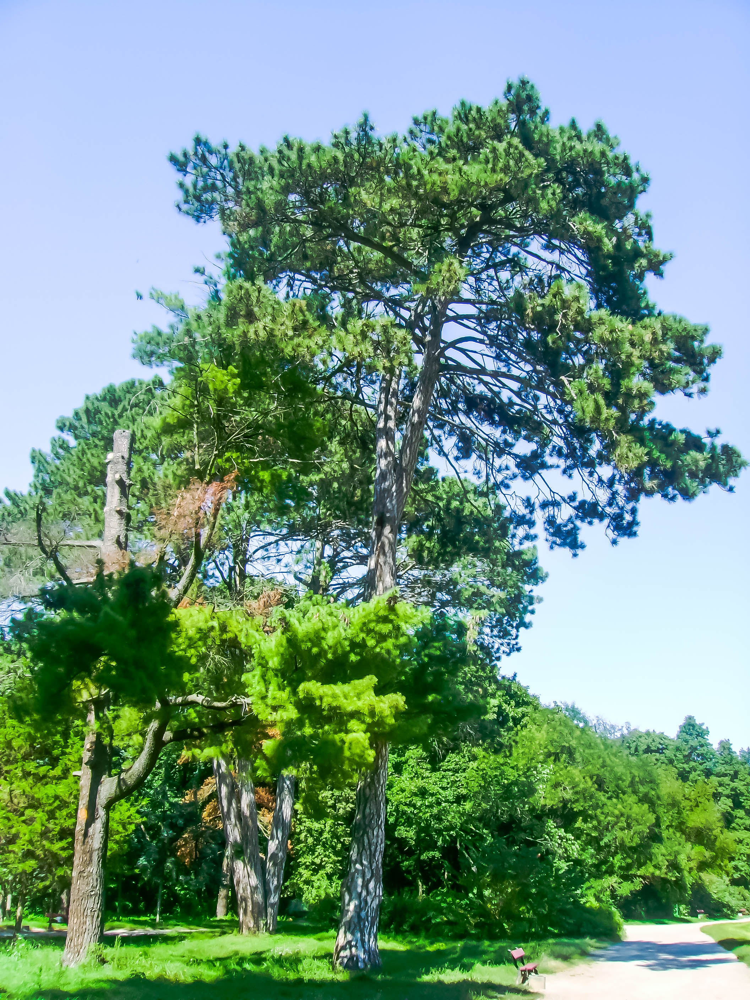

Парк Олександрія це найстаріший дендропарк України – заснований в 1788 році. Дендропарк є найстарішою установою подібного типу не тільки в Україні, але і в Європі. На його території зростає біля 5 тис. дерев віком понад 200 років (серед них біля 700 інтродукованих).
найбільший дендропарк України – площа 400,67 га;
унікальні колекції рослин нараховують більше 2500 видів та внутрішньовидових таксонів деревних та трав’янистих рослин, серед яких найбільша в Україні колекція тису (4 вида і 22 культивара), ялівцю (4 вида і 83 культивара), старовинних сортів яблуні (117 сортів);
діброва парку є найбільшою із старовікових (середній вік дубів 250 років, максимальний — понад 500 років) і чистою із заплавних дібров України (можливо навіть Європи) — площа 44,6 га;
Вважається, що будівництво парку „Олександрія” було розпочато у 1787 – 1788 рр. До складання проекту були залучені відомі в Європі архітектори-паркобудівники, зокрема Мюффо та італієць Домінік Ботані.
Особливо темпи будівельних робіт збільшилися після 1796 р. (рік смерті Катерини ІІ), коли Браницькі вимушені були переїхати у Білу Церкву на постійне місце проживання.
Територія парку має трохи видовжену конфігурацію, яка по формі нагадує неправильну трапецію. Вся територія має плавний нахил до р. Рось і характеризується перепадом висот, який складає 27 м. Парк перетинають три балки: Східна, Середня, Західна, які мають підземні виходи джерельних вод.
Майже по поперечній осі земельного клину, на підвищеній місцевості при Сквирській дорозі, розташований історичний осередок парку „Дідинець”. Тут влаштовано літню резиденцію графа Браницького „Аустерію” – комплекс павільйонів, залу для танців, допоміжні служби та зелені і водні оздоблення. На віддалі 500 м розташовано економічний двір – правління економа, що відав лише парковим господарством (управитель всіма маєтностями мав резиденцію у Білій Церкві). Тут містилося житло постійних працівників, майстерні, оранжерея та квіткове господарство, фруктовий сад, поруч рибні ставки.
Поряд з „Дідинцем” з західного боку розплановано сад у мурі (сад обведений мурованою стіною для захисту теплолюбних плодових дерев від холодних вітрів); зі східного боку – клини: сад Катерини ІІ та сад Потьомкіна, Російський сад, городи.

Західна частина парку, третина всієї паркової території – відмежована дорогою, від економічного двору до Сквирського шляху, була відведена під мисливські угіддя – звіринець і служила лісопарком.
Решта території була визначена під художню частину паркових влаштувань. До них належить Мала і Велика поляни з прилеглими архітектурними спорудами: Колонада „Луна”, „Руїни”, „Китайський місток”, „Арочний місток”, острів „Марії”, острів „Троянд”, різного роду фонтани, водоспади та інші архітектурні форми. Разом з галявинами та дібровою, ставками та річкою Рось вони утворюють чудовий незабутній парковий ансамбль, який є одним з найкращих не тільки в Україні, а у Європі.
За первісним планом на території парку була запроектована діброва на базі існуючого дубового гаю. Як показує аналіз, архітектор-проектант стояв на творчих засадах ландшафтного принципу в паркобудівництві, який здобув визнання в той період по всій Європі.
Цей принцип полягає в тому, що всі паркові влаштування (поляни, галявини, зелені масиви, водні плеса й тощо) запроектовані у формі вільних природних конфігурацій, так само і алеї-дороги, що їх обрамляють, або зв’язують між собою. Такі в „Олександрі” – Діброва, Велика і Мали галявини, , пейзажі на „Клинах”, ставки.
Однак в „Олександрії” поруч з елементами ландшафтного принципу значне місце посідають елементи принципу регулярного. Найперше, автор проекту розташував будівельне ядро палацової групи ні на периферійній території парку, або за його межами, не включаючи в чинники активного показу, як це було узаконено ландшафтним принципом, а майже по осі паркового клину. В доповнення до цього палацовій групі були підпорядковані алеї: Головна, Ялинова, Липова, Соснова, Грабова – всі прямі, крім того перед павільйонами було влаштовано партерний газон, поряд Мала та Велика галявини. Вони були оформлені стриженими та вільноростучими чагарниками, вазами та скульптурами. Всі ці елементи повністю притаманні регулярному стилю парків. Таким чином, „Олександрія” належить до мішаного стильового принципу.
Час значно змінив накреслення первісного проекту, сади Катерини ІІ та Потьомкіна, сад „Мур”, Російський сад у східній частині парку, Березова алея відмерли і на їх місці виникли масиви більше, чи менше організованих пейзажів і пейзажних фрагментів та самосіву. Однак частина композицій: Велика та Мала поляни, Ялинова алея, Діброва – ще несуть належне їм ландшафтне навантаження.
До 1861 року в парку були впоряджені та розплановані лише східна та центральна частини. В цей період було відмінено кріпосне право та проведена земельна реформа. Поступово розвиток парку призупинявся. Втративши безкоштовну робочу силу, Браницькі більше уваги приділяють розвитку господарської частини та отриманню прибутків від неї. В парку додатково обладнано декілька ставків по вирощуванню промислової риби, в східній та центральній частинах створені великі садові ділянки для вирощування овочів та фруктів. Кількість паркових композицій, що потребують постійного та дорогоцінного догляду, значно скоротилася, а деякі з них було замінено на простіші.
Під час громадянської війни на Україні у 1918-1921 рр. “Олександрія” сильно постраждала. Літня резиденція Браницьких, більшість архітектурних споруд були повністю або частково знищені. З парку було вивезено багато цінних мармурових та бронзових скульптур. Значної шкоди було завдано й парковим насадженням.
В 1920 році, після організації Білоцерківського сільськогосподарського технікуму, місцевими земельними органами парк передається йому в користування. Починаючи з 1921 р, він стає основною базою навчально-дослідного господарства технікуму. Виходячи з потреб відбудови господарства в перші роки Радянської влади, час від часу, поволі “на цеглу” розбиралися зруйновані або напівзруйновані споруди, вирубувалися дерева. Насадження парку використовувалися не з декоративною метою, як це мало бути, а задля добування деревини.
Ще більшої руйнації парк зазнав після рішення Білоцерківського окружного виконавчого комітету в лютому 1928 р. про побудову на його території водогону для міста. На таке рішення не вплинуло роз’яснення наркомату освіти, якому належав парк, про неможливість розташування водопостачальних споруд в центрі парку “Олександрія”. Незважаючи на це, зовнішній вигляд “Турецького будиночка” було змінено. Через весь парк у різних напрямах зроблено просіки під час чого знищено цінні породи дерев понівечено композиції. Посередині парку над р. Рось влаштовано водогін, від якого через увесь парк прокладено водогоні труби на глибині 2 м. Шлях вздовж Головної алеї парку цілком зруйновано під час доставки до водогону будівельних матеріалів.
Під час Великої Вітчизняної війни 1941-1945 рр. в „Олександрії” була пошкоджена значна частина дерев, а залишки архітектурних споруд майже повністю зруйновано.
У 1946 р. “Олександрія” ввійшла до складу Академії наук УРСР. В післявоєнні роки тут здійснювався лише догляд за насадженнями та проводилися підготовчі роботи по її реконструкції. У 1955 р. „Київоблпроект” при активній участі архітектора Д.М. Криворучка приступив до створення проекту реставрації та розвитку парку.
Радою Міністрів УРСР 2 березня 1959 р. дендропарк віднесено до заповідних пам’яток природи та культури і взято під охорону держави.
За цей час проведено велику роботу з впорядкування зелених насаджень парку, які збереглися. Посаджено нові дерева у східній частині парку за проектом І.Г. Дерія, в західній частині насаджено колекційний горіховий сад, створено колекційну ділянку гарно квітучих чагарників. На території парку ліквідовані випадкові дороги та стежки, що з’явилися в результаті бездоглядності, а також проведено ремонт старої алейно-дорожної мережі.
За проектом і під керівництвом Д.М. Криворучко відбудовано ряд архітектурних споруд: Головний вхід, Ротонда, Колона „Суму”, колонада „Луна”, Китайський місток, Арочний місток, „Руїни”, Великий водоспад та ін.
Постановою Ради Міністрів УРСР від 22 липня 1983 р. № 311 з метою збереження, вивчення та збагачення в штучних умовах рослинних ресурсів для їх найбільш ефективного наукового, культурного і господарського використання створено Державний дендрологічний парк “Олександрія” Академії наук України. Парк входить до складу природно–заповідного фонду України і охороняється як національне надбання, щодо відвідування якого встановлюється особливий режим охорони, відтворення і використання.
В останні роки колектив парку працює над питаннями збереження існуючих паркових насаджень, зокрема вікової діброви, та відновлення історичних композицій (сади Катерини ІІ та Потьомкіна, Царський сад, „Клини”, острови „Марії” та „Троянд”, „Дідинець”).